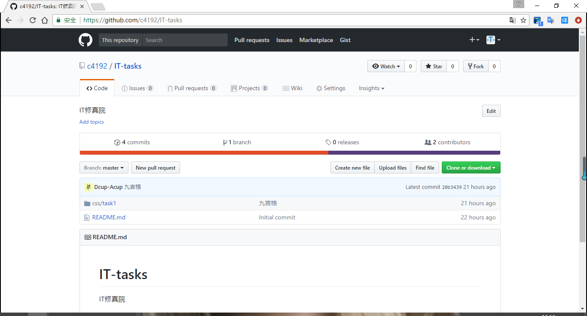

SVN
----SVN使用流程
Git
----window简单使用流程
接下来是重要的时间
如何上传代码，先去看 廖雪峰（看到安装就好），然后下载一个git点击这里下载（百度云/廖雪峰里也有下载链接），接下来看下面的操作
本机创建一个文件夹当你的大本营
在进行下一步之前，再看一个教程 Git可视化极简易教程 — Git GUI使用方法，看完账号保存就可以了
下一步就是具体操作了
把task1的文件夹直接放在刚才clone的项目里，然后在新出来的界面里点一下按钮2(rescan)，左上角就会刷新出项目变化状态。然后点按钮3(stage changed)，左下角就会把上面的变化文件转成即将提交的文件。接下来按钮4(sign off)，右边会出来字，可以更改，我就改成九宫格了。最后两个按钮依次点了。上述过程中出现任何警告点了就好
在最后一步push的时候，会弹出一个框，点击右下角的push，然后静静等待新出来的提示框变成绿色，这时候打开的github项目页，就可以看到你的代码了
最后的最后，再给一个教程链接制作你的github page
Sublime text 3
----常用插件与快捷键
百度，Sublime插件(搜索引擎很强大)
代码补全(css)，路径提示补全···看着来吧
Sublime的快捷键也很强大，请百度